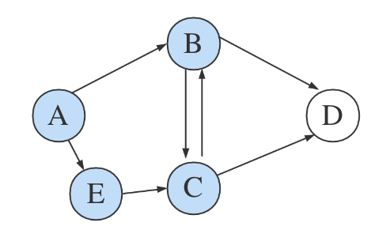

Saving Paths in Dijkstra's Algorithm
In the Layer 2 of blockchain, there is an expansion scheme called State Channels, which requires finding the nearest routing nodes.
Dijkstra’s Algorithm Concept
Dijkstra’s algorithm can solve the single-source shortest path problem, but it only outputs the shortest distance from one point to other points. For example, in a graph like this, with the starting point at A, we want to know the shortest distance to point D:

Dijkstra’s algorithm is essentially a combination of dynamic programming and greedy algorithms. To find the shortest path, you traverse all the points, updating the shortest distance records at each point until all points are visited. The initial state set is:
| A | B | C | D |
|---|---|---|---|
| 0 | - | - | - |
At this point, we are at point A, in the unstarted state, with a distance of 0 to itself and unknown distances to the other points.
Starting from point A, we find that A can reach points B and C with distances of 4 and 2 respectively, so we update the state set to:
| A | B | C | D |
|---|---|---|---|
| 0 | - | - | - |
| 4 | [2] | - |
Brackets indicate the shortest distance in the current round. The shortest distance to point C is less than to point B, so the next step is to point C:

After reaching point C, we find that C can reach points A, B, and D. Realizing that point A has already been visited and will not be revisited, we need another set to record the visited points to avoid repetition. Define prev = [], and since points A and C have been visited, add these points to the set, prev = [A, C].
At this step, the distance to point B changes from 4 to 3, as A -> C -> B is shorter than A -> B, so update the state set and also the distance to point D:
| A | B | C | D |
|---|---|---|---|
| 0 | - | - | - |
| 4 | [2] | - | |
| [3] | 5 |
In this round, the distance to point B is less than the distance to point D, so choose 3 and move to point B:

At this point, prev = [A, C, B], and the state set updates to:
| A | B | C | D |
|---|---|---|---|
| 0 | - | - | - |
| 4 | [2] | - | |
| [3] | 5 | ||
| [5] |
With only one choice left, point D, which has not been visited:

prev = [A, C, B, D], and all points are traversed. The final result is:
| A | B | C | D |
|---|---|---|---|
| 0 | 3 | 2 | 5 |
Now we know that the shortest distance from point A to point D is 5.
Shortest Path Tracking
After the algorithm finishes, we can get the shortest distance data from point A to other points. But if we want the specific path, like the shortest path from point A to point D, how do we handle it?
Forward Greedy Algorithm
We can determine that the shortest path from A to D is A -> C -> D, and the above prev set is A, C, B, D. Since going directly from C to D is shorter than C -> B -> D, B is discarded in the path.
Based on this observation, can we discard certain points at the right time to get the correct path on top of prev? For example, from B to D, there are 4 situations:
- B can reach D
- B cannot reach D
- Going through B to reach D is the shortest path in the state set
- Going through B to reach D is not the shortest path in the state set
In these 4 cases, only if B can reach D and going through B to reach D is the shortest path in the state set will B be retained in the path. Otherwise, B should be removed.
Every time a point is chosen in the brackets, it is added to the path, and if it does not meet the above conditions, it is removed from the path. Even with other disruptive points, the program can handle it, for example:

After selecting point B, we find B does not meet the condition. The path path = [A, C, B] reverts to path = [A, C]. If the smallest point in the next round is E, path = [A, C, E], but if E does not meet the condition, path = [A, C]. Until the smallest point selected is the target point D, the program ends.
Or similarly, this approach can handle cases where E will not be included in the path:

Does this method have problems? Yes, it cannot handle cases like:
If the shortest path is [A, E, C, D], E does not meet the condition to be included in the path. E cannot directly reach D, but must be included in the path. Removing the can directly reach D condition? Then E in the previous diagram would also be included in the path.
Whether a point needs to directly reach the target point depends on whether it is the penultimate point in the final path. This condition cannot be determined in an unknown graph; who can tell which point is the penultimate point in the final path?
The forward greedy algorithm tries to record the smallest and final path points at each step, but it is difficult because it is impossible to determine if a point is in the final path.
Reverse Greedy Algorithm
When point D is chosen in the brackets as the smallest distance point, the shortest distance from A to D is determined. Knowing where this step came from, the source point is the penultimate point in the shortest path. By backtracking layer by layer to the starting point, the entire path emerges.
After reaching point D, knowing it came from point C and not point B, and at point C, knowing it came from point A and not point B, the entire path becomes clear.
How do we know at point D that it came from point C and not point B? The sequence of smallest distance points is [A, C, B, D], which is not helpful.
This seems simple. In DFS or tree traversal, multiple paths are entered and returned to correct the path. In DFS, maintaining the shortest distance can also achieve the goal. Is maintaining distance state in DFS == Dijkstra algorithm? Clearly not.
Recursion vs Tail Recursion
Dijkstra is suitable to be written as a loop:
for {
}
More suitable to be written as tail recursion:
func recursion() {
recursion()
}
In short, the program will be a one-way loop. Suitable for writing in recursive form?
func recursion() {
for {
recursion()
}
}
When encountering branches, use a for loop to “simultaneously” enter multiple paths to find the most suitable one. For example, at point C, the for loop enters the paths C -> B -> D and C -> D, retaining only one path each cycle and terminating recursion once the most suitable one is found.
Is there a problem with this writing? The issue is determining where to branch. At point C? Why C? Why not point B? If at point B, the path will include B. Why not point A? If at point A, should branching continue at point C? Every point branching would cause massive redundancy… Why can trees be traversed simultaneously? Because tree nodes do not cross.
Second Dynamic Programming
The first dynamic programming refers to the maintenance of distance data by the algorithm itself. The second dynamic programming can maintain a path data state:
pathList = {
A: [],
B: [],
C: [],
D: []
}
The path state saves the shortest path from the source point to each point at the current stage. Initially, since point A can already reach points B and C:
pathList = {
A: [A],
B: [A, B],
C: [A, C],
D: []
}
Choose and reach point C, since C can reach B and A -> C -> B is shorter than A -> B, update the path state data pathList[C].push(B). Point D can also be reached, so update the path state. (Updating the path state data occurs before entering the next point, even before selecting the next node. Think about why.)
pathList = {
A: [A],
B: [A, C, B],
C: [A, C],
D: [A, C, D]
}